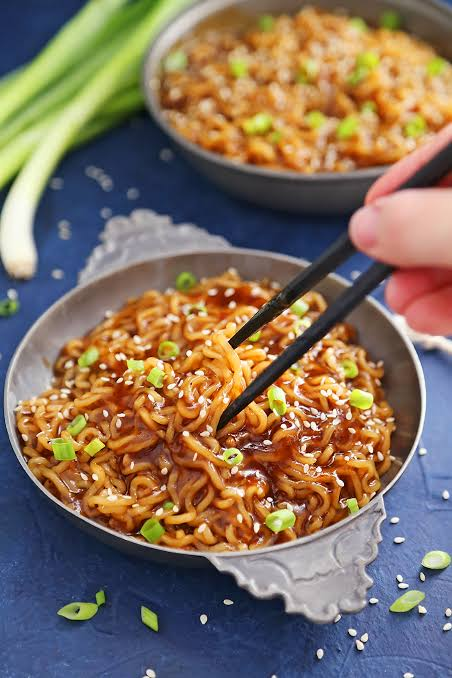

Because it is suoer easy to cook and you could almost anything into it!

-
Soy sauce
- Oyster sauce
- Rice vinegar
- Brown sugar
- Chili sauce, like sambal oelek or sriracha
- Garlic
- Ginger
- Cook the ramen noodles.
- Whisk together the garlicky ramen sauce.
- Stir-fry a little ginger and garlic in sesame oil and then pour in the prepared sauce.
- Simmer the ramen sauce to thicken it a bit, and meld the flavors.
- Stir-fry the cooked ramen noodles in the simmering sauce until the noodles are coated and then when you just can’t take it anymore...
- Serve & eat up!

I hope this recipe helps you all and you enjoy the amazing Ramen!